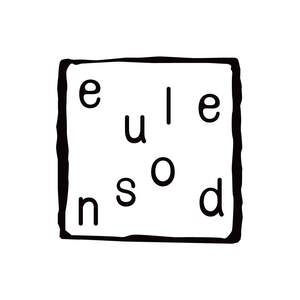

Trade Mark Journal No.2025/041 10 October 2025
UK00004225411 27 June 2025 (6,9,14,20,21,28,35,41)

- Class 6
- Metal moulds and pattern‑forming tools for incense making; metal implements for creating incense‐powder designs (non‑electric).
- Class 9
- Downloadable mobile applications for teaching incense culture; downloadable computer software for creating or customising incense recipes; downloadable audio, video and multimedia files featuring instruction in incense arts; downloadable electronic publications in the field of incense culture.
- Class 14
- Jewellery; scented jewelry; bracelets; bangles; pendants; lockets; necklaces; chokers; rings; earrings; brooches; hair ornaments being jewelry; tiaras; anklets; charms for jewelry; amulets [jewelry] including lucky charms; gemstone jewellery; Diancui-style jewellery featuring silk inlay; hairpins, hair sticks, and hair combs of precious metal with dyed silk; cufflinks; tie clips; key rings and key chains [trinkets or fobs]; jewellery cases; Jewelry-making kits comprising herbal clay, molds, shaping tools, adhesives, findings, decorative elements, and instructions; amulet-making kits [for wearable lucky charms].
- Class 20
- Wooden or plastic boxes, chests and display stands for storing or presenting incense and incense ceremony tools.
- Class 21
- Incense burners of ceramic, earthenware, terracotta, Yixing clay (zisha), glass (liúlí), crystal glass, wood or metal; incense pots; censers; incense stick holders; incense ash catchers; non‑electric aroma diffusers not for medical use; household tongs, scoops, spatulas, tweezers and other utensils for incense ceremony; non‑metal containers for storing incense or incense tools; figurine crafting kits [for decorative figurines or statues from herbal powder].
- Class 28
- All-hanging craft kits comprising wooden plaques, paper images, herbal fragrance sachets, adhesives, and instructions; .
- Class 35
- Retail, online-retail, wholesale and mail-order services connected with the sale of incense and incense-related products, works of art and decorative plaques of common metal, hand tools for artistic crafts, jewellery and scented jewellery, printed matter and art prints, modelling clays and craft adhesives, works of art of stone, concrete, marble, wood, wax, plaster, plastic, porcelain, ceramic, earthenware or glass, textile and non-textile wall hangings and coverings, craft kits for jewellery, amulets, wooden plaques or figurines, and related accessories; advertising, marketing and promotional services relating to all the aforesaid goods; provision of commercial information and consultancy in the field of the aforesaid goods.
- Class 41
- Arranging and conducting offline and online classes, workshops and cultural experience events in the field of incense culture; providing training and live demonstrations in incense making and appreciation; organising personalised incense‑ceremony experiences for cultural or educational purposes; providing on‑line non‑downloadable videos, audio recordings and electronic publications featuring incense arts.
Qi Xi Culture Media Co., Ltd
Representative: Xincheng Yang